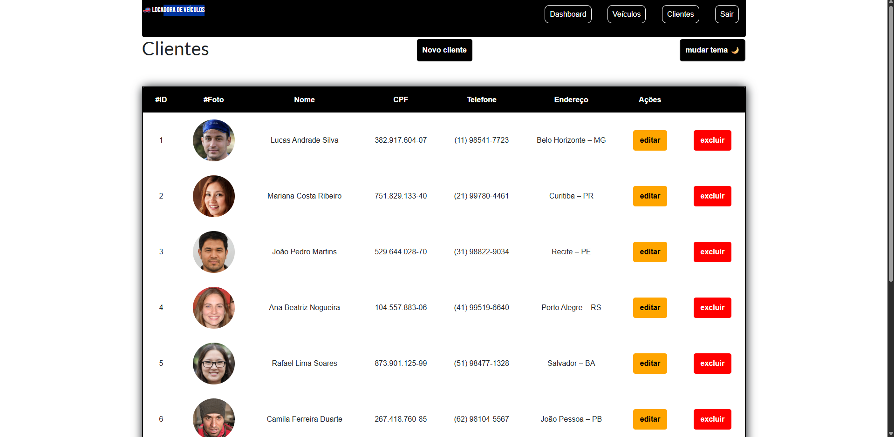
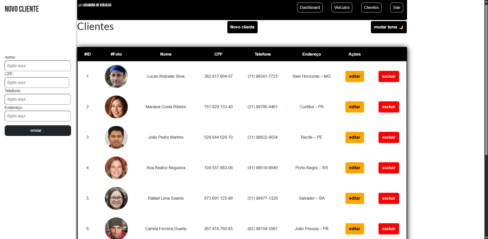
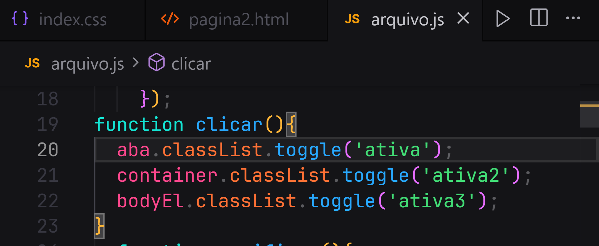
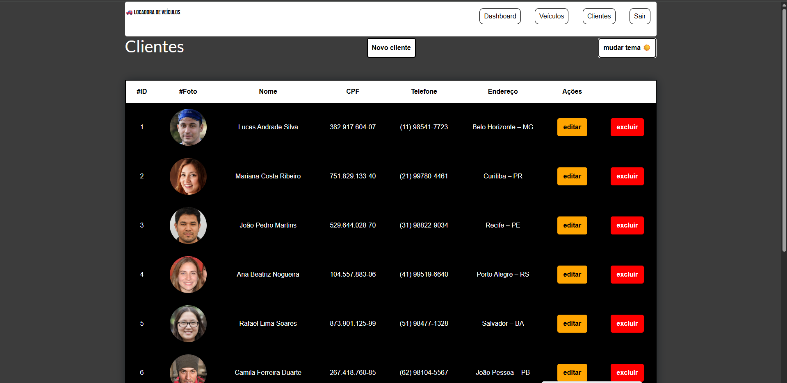
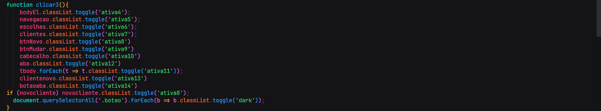
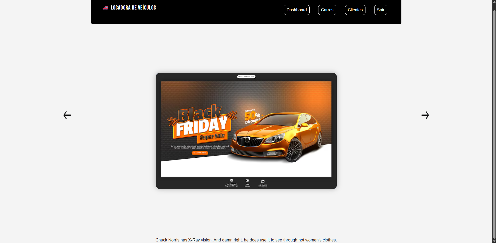

PROJETO-LOCADORA
Nessa aba você verá o passo a passo da construção da locadora de veiculos. Estava começando a desenvolver meus mini-projetos e estava indo atrás de estágios na área. Nesse sentido, tive um trabalho durante o segundo semestre da faculdade que eu fiz e tive a ideia de adotar como um portifolio para botar no meu curriculo. Nesse projeto foi usado desde o básico como css, html, javascript até frameworks como bootstrap e uma API que solicita Frases do chuck noris na parte de dashboard do site.
index do site:

Aqui vemos a página inicial do site. Nela há dois inputs que são manipulados pelo JavaScript por meio do método getElementById(). Esses inputs acionam a função verificar(), responsável por validar se todos os campos foram preenchidos. Caso algum campo esteja vazio, a função identifica o valor como "0", exibe um alert informando que o respectivo campo não foi preenchido e, em seguida, retorna false, impedindo a continuação da ação. A mesma coisa serve se no campo email não tivermos escrito "@gmail.com".


No segundo campo, referente à senha, há uma particularidade importante relacionada
à segurança da informação. Uma das práticas mais básicas em aplicações web é a definição de regras
para a criação de senhas, as quais aumentam significativamente a proteção dos dados dos usuários,
tornando as credenciais mais difíceis de serem comprometidas.
O código em JavaScript realiza essa validação por meio da função validarSenha(pergunta2), chamada
a partir do HTML e responsável por analisar o valor informado no campo de senha. Essa função recebe
como parâmetro o conteúdo do campo correspondente e utiliza expressões regulares para verificar se
a senha atende aos critérios de segurança estabelecidos.
Entre essas validações, é verificada a presença de pelo menos uma letra maiúscula, conforme demonstrado
no trecho de código que utiliza o método .test(). Caso a condição não seja atendida, o sistema exibe uma
mensagem de alerta ao usuário e impede a continuação da ação, garantindo o cumprimento das regras
definidas. "(!/[A-Z]/.test(senha)){ window.alert('A senha deve
conter pelomenos uma letra maiúscula...') return false }"

O uso do bootstrap no index não foi deixado de lado, ele foi usado junto com javascript para criar a lógica por de trás do "mostrar senha" presente no site.
segue em baixo como foi feito o mesmo:

Página principal:

A página principal da Locadora apresenta diversas particularidades relevantes em sua implementação. Dentre elas, destaca-se o uso de tabelas em HTML para a organização das imagens dos clientes e de seus respectivos dados. A tabela é composta por tags específicas que possibilitam uma estilização mais adequada. Por exemplo, ao definir a cor de fundo, não se aplica o estilo diretamente à tag table, mas sim à tag tbody, a qual é semanticamente mais apropriada para esse tipo de seleção e personalização visual. No interior do tbody, foram utilizadas imagens de pessoas fictícias, geradas por meio do site 🔗 https://this-person-does-not-exist.com/en . Essa abordagem contribui para a demonstração visual do sistema sem a necessidade de utilizar dados reais. Cabe ainda destacar que os dois botões presentes na interface, “novo cliente” e “mudar tema”, seguem uma lógica implementada em JavaScript. No caso do botão “novo cliente”, o CSS inicial da aba faz com que ela permaneça totalmente posicionada à esquerda da tela, de modo que não fique visível nem acessível ao usuário. Embora o elemento esteja presente no DOM, sua posição inicial o torna imperceptível na interface. Nesse contexto, o clique no botão aciona a função clicar(), a qual utiliza o método getElementById para acessar as variáveis necessárias e alterar dinamicamente os estilos CSS durante a interação. Ao empregar o método classList.toggle('ex:nome'), uma nova classe é adicionada ou removida da aba conforme o clique do usuário. Essa classe é previamente definida no CSS com as configurações responsáveis por tornar a aba visível, incluindo o ajuste da propriedade left, o uso de position: fixed para mantê-la fixa na tela, além de outras definições visuais, como cores e estilos específicos conforme o design proposto.



A mesma lógica se aplica no botão mudar tema, onde ela chama uma função que é disparada pelo botão em html que, ao clicar, os elementos recebem características proprias css referentes a um tema escuro


Dashboard:
Essa página HTML foi criada para demonstrar interações simples com JavaScript e consumo de APIs, deixando o conteúdo mais dinâmico e interativo. Nela, além de recursos como slider, também é utilizada uma API externa para exibir informações em tempo real, o que agrega valor ao projeto e mostra conhecimento prático de front-end. A API do Chuck Norris é uma API pública e gratuita que retorna curiosidades e piadas aleatórias sobre o personagem Chuck Norris. Ela é muito usada para estudos e projetos de portfólio porque é fácil de consumir, não exige autenticação e retorna os dados em formato JSON, o que facilita a integração com JavaScript. No código JavaScript, a função getFact é declarada como assíncrona (async), pois ela faz uma requisição externa usando fetch. Essa requisição busca uma piada aleatória na API do Chuck Norris. Em seguida, o código converte a resposta para JSON e acessa a propriedade value, que contém o texto da piada. Esse texto é então inserido diretamente em um elemento HTML com o id fact, atualizando o conteúdo da página sem precisar recarregar. A função é executada uma primeira vez assim que a página carrega, garantindo que já exista uma frase exibida. Depois disso, o setInterval faz com que a função seja chamada novamente a cada 7 segundos, atualizando automaticamente o conteúdo com uma nova piada. Isso cria um efeito dinâmico e mostra o uso de requisições assíncronas, manipulação do DOM e atualização automática de dados. No geral, essa implementação demonstra o uso prático de APIs, funções assíncronas e atualização dinâmica de conteúdo, sendo uma ótima adição para um portfólio HTML que busca mostrar interatividade e integração com serviços externos.



Veículos:
Nesta parte do projeto, foi criada uma seção de veículos seguindo a mesma lógica já utilizada na área de clientes. A estrutura foi reaproveitada para manter consistência no site, facilitando tanto a navegação do usuário quanto a organização do código. A principal diferença é que, na seção de veículos, não são utilizadas imagens. Em vez disso, o foco está nos dados e características dos carros, como modelo, marca, ano e outras informações relevantes. Esses dados são exibidos em uma tabela HTML, utilizando a mesma abordagem aplicada na seção de clientes. A lógica de funcionamento da aba continua exatamente a mesma, incluindo a forma de exibição, organização das informações e comportamento da interface. Isso demonstra reaproveitamento de lógica, padronização de layout e entendimento do uso de tabelas para apresentação de dados, pontos importantes em um projeto de portfólio front-end.

resposividade:
Nesta parte do projeto, a responsividade do site foi implementada utilizando media queries, garantindo que o layout se adapte corretamente a diferentes tamanhos de tela. A estrutura mantém a mesma lógica em todas as resoluções, ajustando apenas larguras, espaçamentos, tamanhos de fontes, imagens e tabelas conforme o dispositivo. Foram definidos breakpoints para desktops, tablets e celulares, assegurando uma navegação consistente e organizada em qualquer tela. Essa abordagem reforça a padronização do layout, a reutilização da lógica visual e a preocupação com usabilidade e experiência do usuário em todo o site.